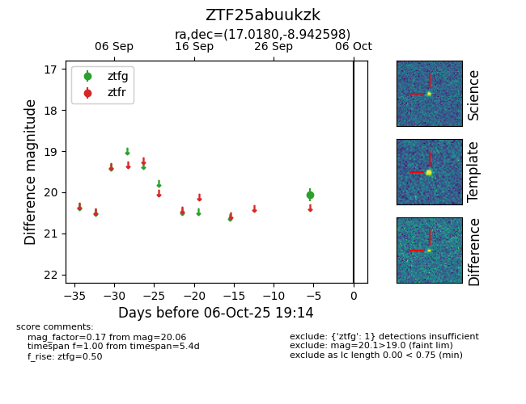

FINK: ZTF25abuukzk
Lasair: ZTF25abuukzk
ALeRCE: ZTF25abuukzk
ZTF25abuukzk (ztf,fink)
equatorial (ra, dec) = (17.0180,-8.94260)
galactic (l, b) = (135.9067,-71.39410)

last ztfg=20.06
1 ztfg detections